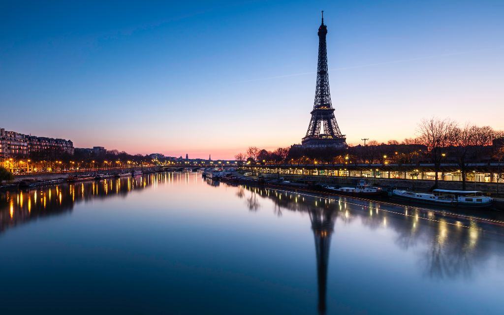
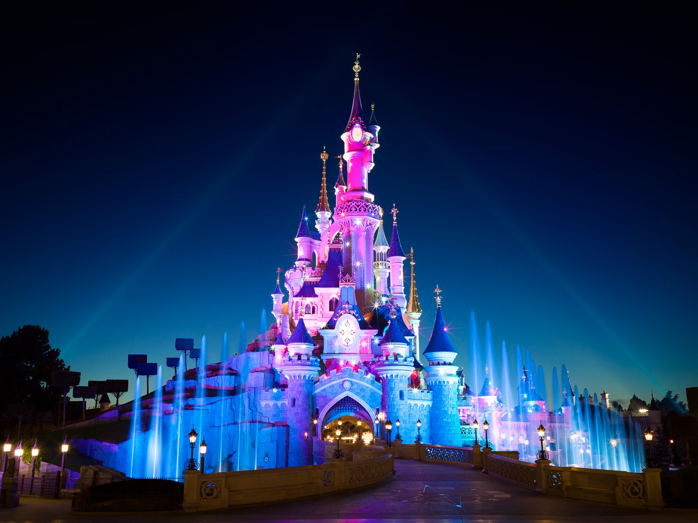
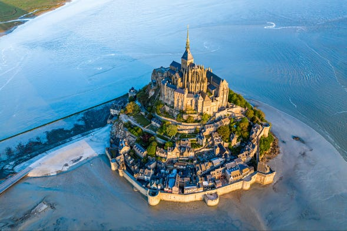
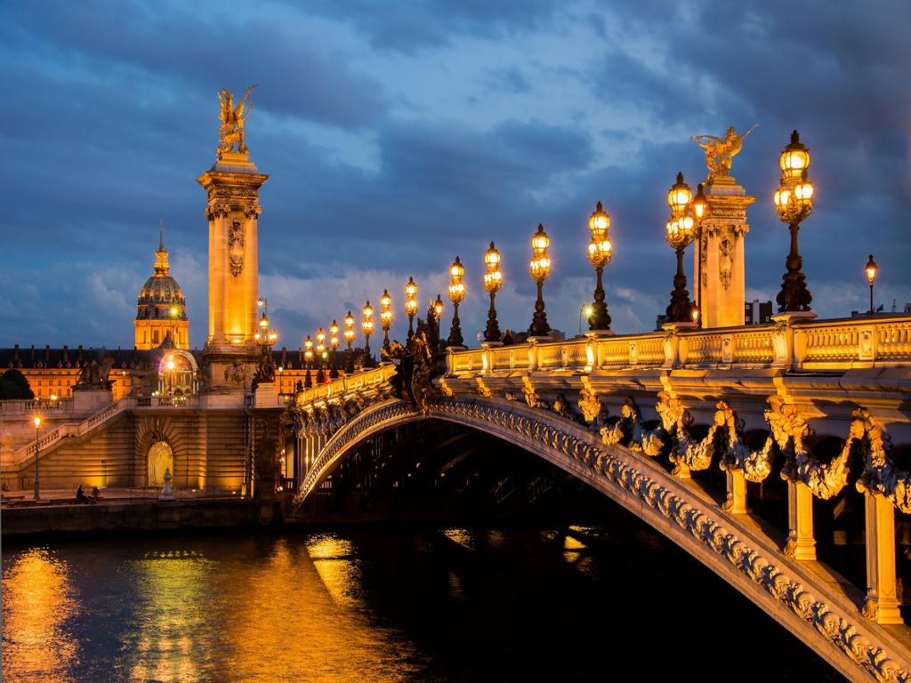
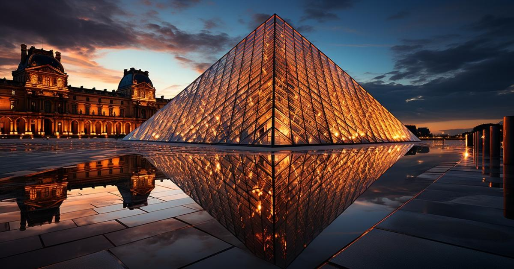

+20 excursiones y actividades en París
Paseo en Barco por el Sena
Tanto de día como de noche, dar un paseo en barco por el Sena es imprescindible para descubrir la belleza de París desde una perspectiva única.

- Incluye un paseo en barco de 1 hora.
- Audioguía disponible en español y otros idiomas.
- Accesible en sillas de ruedas.
Entrada a la 3ª Planta de la Torre Eiffel
Con esta excursion vas a poder subir a la tercera planta de la Dama de Hierro. ¡desde ahi, vas a poder contemplar la capital de Francia desde su monumento más emblemático!
- Incluye entrada por ascensor.
- Audioguía en español.
- Acceso a la cafetería en la tercera planta.
- No accesible en sillas de ruedas.
Excursion a Disneyland
En esta inolvidable excursión desde París descubriréis la magia del complejo Disney, que alberga Disneyland y Walt Disney Studios.

- Incluye Transporte en autobús.
- Entrada a 1 o 2 parques (según la modalidad).
- no incluye Comidas y bebidas.
- No es accesible en silla de ruedas.
Excursion al Mont Saint Michel
En esta excursion visitaremos una de las atracciones turísticas más populares de Francia. Esta isla declarada Patrimonio de la Humanidad fue un centro cultural y de peregrinaje durante la Edad Media.

- Duracion de 12HS.
- Incluye Transporte en autobús.
- Guía de habla española.
- Entrada a la Abadía del Mont Saint Michel.
- No incluye Comidas y bebidas.
- No es accesible en silla de ruedas.
Tour Nocturno por Paris
Muchas ciudades se proclaman la Ciudad de la Luz, pero no hay ninguna como la capital francesa. En este tour nocturno por París se enamoraran de su magia.

- Duracion de 2HS.
- Con esta excursion podes incluir Crucero por el Sena (según modalidad).
- Guía de habla española.
- Accesible en silla de ruedas.
Visita guiada por el museo del Louvre
Recorreremos una de las pinacotecas más importantes del mundo, donde destacan grandes obras de artistas como Da Vinci o Delacroix.

- Duracion de 2 - 3HS
- Guía de habla española.
- Entrada a la Abadía del Mont Saint Michel.
- Accesible en silla de ruedas.
Es necesario un acompañante.